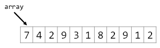

Pointer Arithmetic
Pointer arithmetic is the process of manipulating pointers to better facilitate accessing arrays of data in memory. Though the term “arithmetic” implies that a whole range of arithmetic operations can be performed, we are normally restricted to addition and subtraction.
Manipulating Pointers
Remember the Pointers lesson
that a pointer is a reference to a location in memory.
We typically do not know where this memory is located until run-time;
the operating system places the program in memory and often puts it in a different location every time.
Note that arrays are collections of data guaranteed to reside in contiguous blocks of memory.
From these two observations it should be clear that, given some array[i],
the location array[i + 1] should be in the adjacent location in memory.
Pointer arithmetic is the process of levering this proximity to access array data.
Consider the following code:
{
char text[] = "CS"; // some buffer in memory
char * pC = text; // text refers to the first item, so pC does as well
char * pS = text + 1; // the next location in memory is one item beyond the first
}
In this example, text points to the string "CS" or, more accurately, to the first letter of the string.
Next, the variable pC inherits its address from text which points to 'C' (hence the name pC).
Finally, since the letter 'S' is one letter beyond 'C' in the string,
it follows it has an address one greater than the 'C'.
Thus, we can find the address of 'S' by taking the address of 'C' (as specified by the variable text) and adding one:
It turns out that integer pointers work the same way. The only difference is that integers are 4 bytes in length where characters are one. However, the pointer arithmetic is the same:
{
int array[] =
{
42, 99 // two numbers using 8 bytes of memory
};
int * p42 = array; // just like characters, points to the first item
int * p99 = array + 1; // add one to move forward four bytes!
}
Just like the first example, array points to the first number in the list.
Next, the variable p42 has the same value (the address of 42) as array.
Finally, since the number 99 is next to the number 42,
it follows it will have an address one greater.
Thus, we can find the address of 99 by taking the address of 42 and adding one.
Because arrays (including strings) are just pointers, it is often most convenient to traverse an array with a pointer than with an index. This involves incrementing the pointer variable rather than an index.
Arrays in Memory
Because arrays are just pointers,
we have to distinct notations when working with arrays:
the square bracket notation [] and the pointer notation *.
Consider the following array:
int array[] =
{
7, 4, 2, 9, 3, 1, 8, 2, 9, 1, 2
};
This can be represented with the following table:

The first element in an array can be accessed two ways:
cout << "array[0] == " << array[0] << endl; cout << "*array == " << *array << endl; assert(array[0] == *array);
The first output line will of course display the value 7.
The second will dereference the array pointer, yielding the value it points to.
Since pointers to arrays always point to the first item, this too will give us the value 7.
In other words, there is no difference between *array and array[0]; they are the same thing!
Similarly, consider the 6th item in the list. We can access with:
cout << "array[5] == " << array[5] << endl; cout << "*(array + 5) == " << *(array + 5) << endl; assert(array[5] == *(array + 5));
The *() notation is somewhat complicated.
We know the 6th item in the list can be accessed with array[5]
(remembering that we start counting with zero instead of one).
The next statement (with *(array + 5) instead of array[5]) may be counter-intuitive.
Since we can point to the 6th item on the list by adding five to the base pointer (array + 5),
then by dereferencing the resulting pointer we get the data:

Therefore, we can access any member of an array using either the square bracket notation or the star-parentheses notation.
Try it yourself!
Define an array of ten doubles.
Fill the array with the values 1.1, 2.2, and so on.
Display the 7th element of the array using the subscript operator ([]).
Do the same using the pointer notation
(*(array + 7)).
Looping Through an Array
Up to this point, all the loops we have written to access individual members of a string or array have used index variables and the square-bracket notation. It turns out we can write an equivalent pointer-loop for each index-loop. These loops tend to perform better than their index counterparts because fewer assembly instructions are required. The two main applications for pointers as loop variables are array traversing loops and string traversing loops.
Recall that the standard way to use a for loop to walk through an array is:
for (int i = 0; i < num; i++) cout << array[i];
It turns out we can use a pointer to loop through an array of integers if the length of the array is known. Consider the following array:
int array[] =
{
43, 96, 21, 35, 42
};
In this example, the pointer to the beginning of the list is array and the pointer to the item off the end of the list is array + num:
This allows us to write a loop to walk through the list:
int * pEnd = array + num; for (int * p = array; p < pEnd; p++) cout << *p << endl;
Observe how, with each iteration, the pointer variable p advances by one address.
This continues until p is no longer less-than the item off the end of the list pEnd.
Since we are working with arrays, we can dereference each item in the list with *p.
Try it yourself!
Define an array of ten doubles.
Fill the array with the values 1.1, 2.2, and so on.
Display all ten values using a pointer loop.
Looping Through a String
With strings, the end of the string is defined as the null-character ('\0') which happens to be false.
This leads us to the second standard for loop: traversing a string with a pointer.
for (char * p = text; *p; p++) cout << *p;
Just like with the aforementioned array example, we advance the pointer rather than an index into the string. The big difference is the controlling Boolean expression: a null-terminator check rather than looking for a pointer to the end of the string.
In this example, text points to the first item in the string ('S').
The loop starts by assigning p to also point to the first item.
The loop continues by advancing p through the string.
The loop terminates when *p is no longer true.
This occurs when p points to the null-character ('\0').
Try it yourself! Define a string with your full name. Display each letter in your name on its own line using a pointer loop.